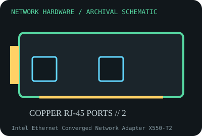

[ MODEL-SPECIFIC NETWORK HARDWARE RECORD ]
Intel Ethernet Converged Network Adapter X550-T2
Dual-port PCIe 10GBASE-T adapter with RJ-45 connectors. This record identifies the stated model/revision; visually similar products may use different silicon or firmware.

IDENTIFICATION: Verify the full label, board revision, vendor/device IDs and regulatory markings before selecting firmware or drivers. Nominal PHY/link rates below are not measured application throughput.
Specifications and compatibility
| Subcategory | 10 Gigabit and server adapters |
|---|---|
| Exact model | Intel Ethernet Converged Network Adapter X550-T2 |
| Interface and connector | PCIe 3.0 x4 electrical host interface; two RJ-45 10GBASE-T ports; backward rates supported by link partner. |
| Controller / PHY / radio | Intel X550 controller with integrated 10GBASE-T PHYs; 10GBASE-T cabling reach and negotiated rate depend on cable and installation. |
| Nominal throughput (not a test) | Two ports up to 10 Gb/s each (20 Gb/s aggregate nominal, per direction); 10GBASE-T typically requires Cat 6A for full 100 m reach, with Cat 6 range dependent on conditions. |
| Measured throughput | No measured transfer rate is asserted. Sustained performance depends on PCIe topology, CPU, packet size, thermals, cabling, switch, driver and number of flows. |
| Driver / OS / firmware | Intel Linux ixgbe driver supports X550; Intel offers Windows/Windows Server drivers for supported systems. Firmware/NVM and OS release support should be taken from Intel or OEM release notes. |
| Compatibility | Requires PCIe x4 electrical connectivity, adequate chassis airflow and 10GBASE-T switch ports. Copper 10GbE cards can run warm; allow airflow and use cabling certified for the target distance. |
| Variant warning | X550-T2 is copper/RJ-45 and not X550-T1, X550-AT2 onboard silicon, or an X710 SFP+ card. Check option/retail SKU, bracket and NVM, especially for OEM servers. |
Variant and operating notes
X550-T2 is copper/RJ-45 and not X550-T1, X550-AT2 onboard silicon, or an X710 SFP+ card. Check option/retail SKU, bracket and NVM, especially for OEM servers.
Intel Linux ixgbe driver supports X550; Intel offers Windows/Windows Server drivers for supported systems. Firmware/NVM and OS release support should be taken from Intel or OEM release notes.
Throughput policy: vendor/standard rates are labeled nominal. This archive includes no measured benchmark for this specimen; do not interpret a link rate or aggregate port capacity as sustained payload performance.
Archival, ESD and preservation notes
Record option P/N, board rev, NVM, both MACs and BIOS. ESD-safe handling is required; do not block heatsink airflow, and avoid touching RJ-45 contacts or heatsink while energized.
Preserve the exact model/revision, serial/date code, firmware and driver versions, accessories, condition, source provenance, and source-document revision. Never retain access credentials or undocumented secrets in the public catalog.
Manufacturer and standards sources
- Intel X550-AT2 controller specificationsManufacturer or standards reference; match the complete model/revision before applying specifications.
- Intel X550 adapter supportManufacturer or standards reference; match the complete model/revision before applying specifications.
- IEEE 802.3 Ethernet standardsManufacturer or standards reference; match the complete model/revision before applying specifications.
Source coverage can be family-level; manufacturer documentation for the exact part number and hardware revision takes precedence. Standards describe protocol behavior, not a promise of real-world performance.